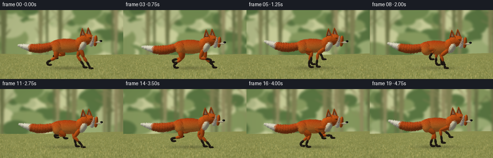
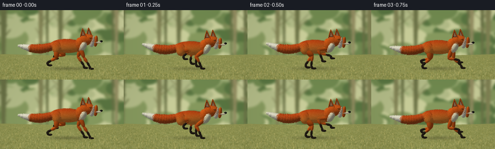
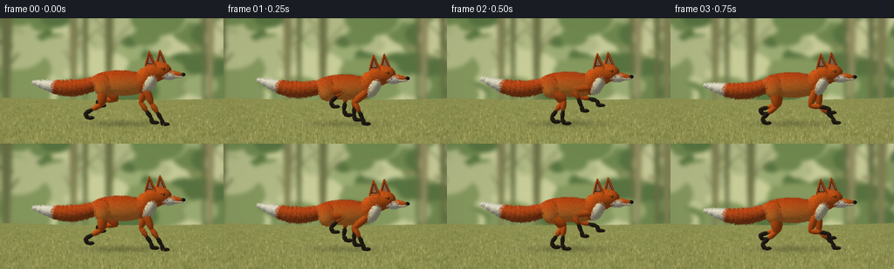
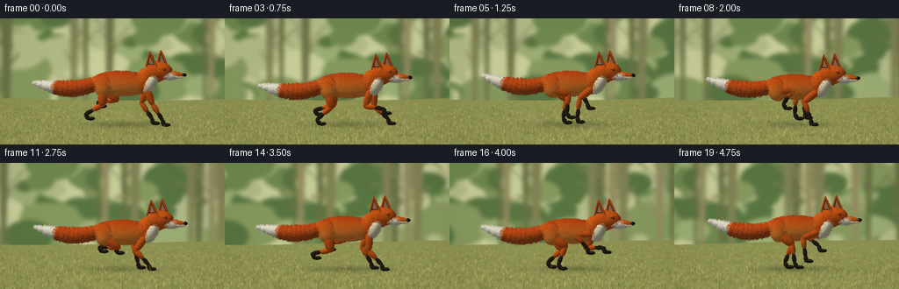

CODING AGENTS AS PIXEL WORLD MODELS
traex/GPT-6.1-Sol · instance_preservation_0014
点击播放 · 原生 RGB 像素
逐轮保存的候选
回放视频、检查图与代码变化。
每份候选均可单独播放。实际图片检查记录在下方工具轨迹中。
候选 01播放与检查图
点击播放 · 原生 RGB 像素


展开代码变化
--- 上一保存版本
+++ 本次保存版本
@@ -0,0 +1,292 @@
+from pathlib import Path
+import math
+import numpy as np
+from PIL import Image, ImageDraw, ImageFilter
+import artifact_io
+
+ROOT=Path(__file__).resolve().parent
+W,H,S=256,144,3
+WW,HH=W*S,H*S
+rng=np.random.default_rng(319)
+# Orthographic camera: a low, almost side-on wildlife tracking shot.
+yaw=.16; elev=.105
+E1=np.array([math.cos(yaw),0,-math.sin(yaw)])
+E2=np.array([-math.sin(yaw)*math.sin(elev),math.cos(elev),-math.cos(yaw)*math.sin(elev)])
+V=np.cross(E1,E2)
+scale=39.0*S
+cx=145*S; cy=122*S
+LIGHT=np.array([-.45,.79,.42]); LIGHT/=np.linalg.norm(LIGHT)
+
+def background():
+ bw=1500*S
+ yy=np.linspace(0,1,HH)[:,None,None]
+ top=np.array([178,193,144]); bottom=np.array([129,145,72])
+ a=np.broadcast_to(top[None,None,:]*(1-yy)+bottom[None,None,:]*yy,(HH,bw,3)).copy()
+ im=Image.fromarray(a.astype('uint8'))
+ d=ImageDraw.Draw(im)
+ rr=np.random.default_rng(19)
+ # Out-of-focus woodland, with soft patches of sky between the leaves.
+ for k in range(700):
+ x=rr.uniform(-40,1540)*S; y=rr.uniform(-40,95)*S
+ r=rr.uniform(9,42)*S
+ co=rr.choice([(89,117,65),(112,137,79),(134,153,94),(156,173,116),(178,187,135),(200,205,153)])
+ d.ellipse((x-r,y-r*.65,x+r,y+r*.65),fill=tuple(co))
+ for k in range(48):
+ x=rr.uniform(0,1500)*S; wide=rr.uniform(2,7)*S
+ co=tuple(rr.choice([(105,113,69),(129,130,84),(147,141,97)]))
+ d.polygon([(x-wide,-5*S),(x+wide,-5*S),(x+wide*.4,98*S),(x-wide*.6,98*S)],fill=co)
+ for j in range(4):
+ y=rr.uniform(5,65)*S
+ d.line((x,y,x+rr.uniform(-25,25)*S,y-rr.uniform(8,26)*S),fill=co,width=max(1,int(wide*.4)))
+ im=im.filter(ImageFilter.GaussianBlur(2.4*S))
+ d=ImageDraw.Draw(im)
+ pts=[(0,HH),(0,94*S)]+[(x*S,(91+3*math.sin(x/95))*S) for x in range(0,1501,20)]+[(bw,HH)]
+ d.polygon(pts,fill=(142,146,81))
+ # Ground has soft, continuous natural texture, not a flat stage.
+ arr=np.asarray(im).astype(float)
+ small=rr.normal(size=(60,400))
+ noise=np.asarray(Image.fromarray(((small-small.min())/(small.max()-small.min())*255).astype('uint8')).resize((bw,HH),Image.Resampling.BICUBIC)).astype(float)
+ ground=np.clip((np.arange(HH)[:,None]/S-89)/35,0,1)
+ arr+=(noise[:,:,None]-128)*.18*ground[:,:,None]
+ im=Image.fromarray(np.clip(arr,0,255).astype('uint8')); d=ImageDraw.Draw(im)
+ for k in range(17500):
+ x=rr.uniform(-5,1505)*S; y=rr.uniform(94,147)*S
+ length=rr.uniform(.8,4)*(y/S-85)/45*S
+ c=rr.choice([(109,121,57),(124,130,64),(164,160,88),(191,182,112),(149,150,76),(183,176,103)])
+ d.line((x,y,x+rr.uniform(-1,1)*S,y-length),fill=tuple(c),width=rr.choice([1,1,2]))
+ return im.filter(ImageFilter.GaussianBlur(.32*S))
+BG=background()
+
+# The same surface samples are reused at every time, maintaining coat identity.
+samples={}
+def sample(n,key):
+ if key not in samples:
+ r=np.random.default_rng(key*131+97)
+ v=r.normal(size=(n,3)); v/=np.linalg.norm(v,axis=1)[:,None]
+ samples[key]=(v,r.random(n),r.random(n))
+ return samples[key]
+
+class Renderer:
+ def __init__(self,im):
+ self.rgb=np.asarray(im).astype(float).copy()
+ self.depth=np.full((HH,WW),-1e5)
+ self.hairs=[]
+ def project(self,p):
+ return np.stack([cx+scale*(p@E1),cy-scale*(p@E2),p@V],axis=-1)
+ def coat(self,local,normal,mat,seed):
+ n=len(local)
+ if mat=='body':
+ u=np.clip((local[:,1]+.4)/1.2,0,1)
+ col=np.array([229,129,48])[None,:]*(1-u[:,None])+np.array([181,65,18])[None,:]*u[:,None]
+ # Golden fox flank; deeper russet guard hair along the spine.
+ flank=np.clip(normal[:,2],0,1)
+ col+=flank[:,None]*np.array([15,13,3])
+ elif mat=='orange': col=np.tile([210.,91,24],(n,1))
+ elif mat=='tail':
+ u=np.clip((local[:,1]+1)/2,0,1)
+ col=np.tile([188.,79,26],(n,1))+normal[:,1,None]*np.array([9.,-5,-4])
+ elif mat=='cream': col=np.tile([225.,219,186],(n,1))
+ elif mat=='white': col=np.tile([234.,230,207],(n,1))
+ elif mat=='sock': col=np.tile([43.,35,26],(n,1))
+ elif mat=='nose': col=np.tile([22.,23,21],(n,1))
+ elif mat=='eye': col=np.tile([24.,19,12],(n,1))
+ elif mat=='iris': col=np.tile([179.,114,34],(n,1))
+ elif mat=='shine': col=np.tile([248.,246,213],(n,1))
+ elif mat=='inner': col=np.tile([115.,75,55],(n,1))
+ else: col=np.tile(mat,(n,1)).astype(float)
+ lam=np.maximum(normal@LIGHT,0)
+ shade=.48+.52*lam
+ rim=np.maximum(normal@np.array([-.75,.40,-.53]),0)**6
+ col=col*shade[:,None]+rim[:,None]*np.array([28,23,12])
+ grain=(np.sin(local[:,0]*159+local[:,1]*127+local[:,2]*91+seed)*np.sin(local[:,2]*153-local[:,1]*89))*6
+ if mat in ['body','orange','tail','white','cream','sock']:
+ col+=grain[:,None]
+ if mat=='nose':
+ spec=np.maximum(normal@((LIGHT+V)/np.linalg.norm(LIGHT+V)),0)**24
+ col+=spec[:,None]*55
+ return np.clip(col,0,255)
+ def ellipsoid(self,center,radii,mat,key,axis=None,fur=0,nfur=900):
+ c=np.array(center); r=np.array(radii)
+ R=np.eye(3)
+ if axis is not None:
+ ay=np.array(axis); ay/=np.linalg.norm(ay)
+ ax=np.cross(ay,[0,0,1]); ax/=np.linalg.norm(ax)
+ az=np.cross(ax,ay); R=np.stack([ax,ay,az],axis=1)
+ pc=self.project(c)
+ ext=np.sqrt((E1@R*r)**2 @ np.ones(3))*scale+fur*scale+3
+ ey=np.sqrt((E2@R*r)**2 @ np.ones(3))*scale+fur*scale+3
+ x0=max(0,int(pc[0]-ext)); x1=min(WW,int(pc[0]+ext)+1)
+ y0=max(0,int(pc[1]-ey)); y1=min(HH,int(pc[1]+ey)+1)
+ if x1<=x0 or y1<=y0:return
+ Y,X=np.mgrid[y0:y1,x0:x1]
+ O=(X[:,:,None]-cx)/scale*E1+(cy-Y[:,:,None])/scale*E2
+ q=((O-c)@R)/r; dv=(V@R)/r
+ A=np.dot(dv,dv); B=np.sum(q*dv,axis=2); C=np.sum(q*q,axis=2)-1
+ disc=B*B-A*C
+ hit=disc>=0
+ t=(-B+np.sqrt(np.maximum(disc,0)))/A
+ hit&=t>self.depth[y0:y1,x0:x1]
+ if np.any(hit):
+ p=O[hit]+t[hit,None]*V
+ local=((p-c)@R)/r
+ nor=(local/r)@R.T; nor/=np.linalg.norm(nor,axis=1)[:,None]
+ self.rgb[y0:y1,x0:x1][hit]=self.coat(local,nor,mat,key)
+ self.depth[y0:y1,x0:x1][hit]=t[hit]
+ if fur:
+ v,random1,random2=sample(nfur,key)
+ p=(v*r)@R.T+c
+ normal=(v/r)@R.T; normal/=np.linalg.norm(normal,axis=1)[:,None]
+ vis=(normal@V)>-.05
+ p=p[vis]; normal=normal[vis]; v=v[vis]; ra=random1[vis]; rb=random2[vis]
+ # Guard hairs follow the back, cheeks and tail, with a small outward loft.
+ flow=np.tile([-1.,-.20,0],(len(p),1))
+ if mat in ['cream','white']:flow=np.tile([-.1,-1.,0],(len(p),1))
+ if mat=='sock':flow=np.tile([0,-1.,0],(len(p),1))
+ if mat=='tail' and axis is not None: flow=np.tile(np.array(axis)/np.linalg.norm(axis),(len(p),1))
+ tang=flow-normal*np.sum(flow*normal,axis=1)[:,None]
+ direction=normal*.64+tang*.65
+ length=fur*(.45+.7*ra)
+ p2=p+direction*length[:,None]
+ a=self.project(p); b=self.project(p2)
+ colors=self.coat(v,normal,mat,key)+(rb[:,None]-.45)*24
+ for aa,bb,col in zip(a,b,colors):
+ ix=int(aa[0]); iy=int(aa[1])
+ if 0<=ix<WW and 0<=iy<HH and aa[2]>self.depth[iy,ix]-.021:
+ self.hairs.append((aa[2],aa[:2],bb[:2],tuple(np.clip(col,0,255).astype(int))))
+ def triangle(self,points,color):
+ p=np.array(points); proj=self.project(p)
+ x0=max(0,int(proj[:,0].min())); x1=min(WW,int(proj[:,0].max())+2)
+ y0=max(0,int(proj[:,1].min())); y1=min(HH,int(proj[:,1].max())+2)
+ if x1<=x0 or y1<=y0:return
+ Y,X=np.mgrid[y0:y1,x0:x1]
+ a,b,c=proj
+ denom=(b[1]-c[1])*(a[0]-c[0])+(c[0]-b[0])*(a[1]-c[1])
+ if abs(denom)<1e-7:return
+ u=((b[1]-c[1])*(X-c[0])+(c[0]-b[0])*(Y-c[1]))/denom
+ v=((c[1]-a[1])*(X-c[0])+(a[0]-c[0])*(Y-c[1]))/denom
+ w=1-u-v; z=u*a[2]+v*b[2]+w*c[2]
+ hit=(u>=0)&(v>=0)&(w>=0)&(z>self.depth[y0:y1,x0:x1])
+ n=np.cross(p[1]-p[0],p[2]-p[0]);n/=np.linalg.norm(n)
+ if n@V<0:n=-n
+ co=np.array(color)*(.58+.42*max(0,n@LIGHT))
+ self.rgb[y0:y1,x0:x1][hit]=co;self.depth[y0:y1,x0:x1][hit]=z[hit]
+ def finish(self):
+ im=Image.fromarray(np.clip(self.rgb,0,255).astype('uint8'))
+ d=ImageDraw.Draw(im)
+ for depth,a,b,col in sorted(self.hairs,key=lambda h:h[0]):
+ ix=int(b[0]); iy=int(b[1])
+ if 0<=ix<WW and 0<=iy<HH and depth>=self.depth[iy,ix]-.07:
+ d.line((a[0],a[1],b[0],b[1]),fill=col,width=1)
+ return im
+
+def bone(rr,a,b,width,mat,key,fur=.026):
+ a=np.array(a);b=np.array(b); rr.ellipsoid((a+b)/2,[width,np.linalg.norm(b-a)/2+width*.4,width*.85],mat,key,axis=b-a,fur=fur,nfur=450)
+
+def ik(hip,foot,l1,l2,sign):
+ delta=foot[:2]-hip[:2];d=np.linalg.norm(delta);d=np.clip(d,.05,l1+l2-.005)
+ angle=math.atan2(delta[1],delta[0]); off=math.acos(np.clip((l1*l1+d*d-l2*l2)/(2*l1*d),-1,1))
+ knee=hip.copy();knee[:2]+=l1*np.array([math.cos(angle+sign*off),math.sin(angle+sign*off)])
+ return knee
+
+def render(i):
+ time=i/4; ph=2*math.pi*1.16*time
+ bob=.070*math.cos(2*ph+.2)+.025
+ bg=BG.crop((int(i*11*S),0,int(i*11*S)+WW,HH)).copy()
+ # A soft contact shadow follows the strides, anchoring the fox to the meadow.
+ Y,X=np.mgrid[:HH,:WW]
+ strength=.20+.025*math.cos(ph*2)
+ shadow=np.exp(-((X-140*S)/(46*S))**2-((Y-121*S)/(3.7*S))**2)*strength
+ ba=np.asarray(bg).astype(float)*(1-shadow[:,:,None]); rr=Renderer(Image.fromarray(ba.astype('uint8')))
+ shift=.035*math.sin(ph*.4)
+ def P(x,y,z=0):return [x+shift,y+bob,z]
+ # Hind brush. A curved, thick tail with a large ivory terminal tuft.
+ centers=[]
+ for k in range(15):
+ t=k/14
+ x=-.69-1.90*t; y=1.18-.20*math.sin(t*math.pi)+.11*math.sin(ph-.9*t)*t
+ z=-.04+.08*math.sin(t*2.5)
+ rad=.13+.13*math.sin(math.pi*t)**.6
+ rad*=1-.60*t**5
+ centers.append(np.array(P(x,y,z)))
+ direction=np.array([-1.,-.2*math.cos(math.pi*t)+.1*math.sin(ph-t),.06])
+ rr.ellipsoid(centers[-1],[rad*.88,.19,rad], 'white' if t>.75 else 'tail',80+k,axis=direction,fur=.065 if t<.8 else .072,nfur=700)
+ # Far limbs and near limbs use the same biomechanical rig, offset in the gallop.
+ for side in [-1,1]:
+ z=side*.205
+ for front in [False,True]:
+ offset=(0 if front else .48)+(0 if side==1 else .16)
+ q=(ph/(2*math.pi)+offset)%1
+ hip=np.array(P(.57 if front else -.67,1.09 if front else 1.02,z))
+ if q<.43:
+ u=q/.43; fx=hip[0]+.54-1.02*u; fy=.055
+ else:
+ u=(q-.43)/.57; smooth=u*u*(3-2*u)
+ fx=hip[0]-.48+1.02*smooth;fy=.07+.50*math.sin(math.pi*u)
+ foot=np.array([fx,fy,z+.025])
+ ankle=foot+np.array([-.07 if not front else -.025,.13,0])
+ knee=ik(hip,ankle,.57 if front else .51,.56 if front else .56,-1 if front else 1)
+ key=(10 if front else 20)+(0 if side==1 else 30)
+ bone(rr,hip,knee,.105 if front else .145,'orange',key)
+ split=knee*.47+ankle*.53
+ bone(rr,knee,split,.070,'orange',key+1)
+ bone(rr,split,ankle,.055,'sock',key+2,fur=.017)
+ bone(rr,ankle,foot,.056,'sock',key+3,fur=.014)
+ rr.ellipsoid(foot+[.075,0,0],[.125,.048,.061],'sock',key+4,fur=.018,nfur=300)
+ rr.ellipsoid(P(-.17,1.13),[.91,.355,.30],'body',100,fur=.048,nfur=6500)
+ rr.ellipsoid(P(-.66,1.06,.13),[.28,.33,.245],'body',101,fur=.041,nfur=1500)
+ rr.ellipsoid(P(.54,1.22),[.29,.375,.28],'orange',102,axis=[.32,.89,0],fur=.050,nfur=2100)
+ # White bib follows the throat and underjaw, rather than a painted sticker.
+ rr.ellipsoid(P(.70,1.14,.11),[.165,.30,.218],'cream',103,axis=[.42,.75,0],fur=.048,nfur=1600)
+ neckbob=.018*math.sin(ph+.4)
+ def Q(x,y,z=0):return P(x,y+neckbob,z)
+ rr.ellipsoid(Q(.84,1.48),[.295,.30,.252],'orange',104,axis=[.2,.9,0],fur=.034,nfur=2200)
+ # Two tall triangular ears, with warm dark interiors and pale fur at the rims.
+ for ei,z in enumerate([-.185,.187]):
+ x=.98 if ei==0 else .72
+ tip=Q(x-.015,2.095,z+.01)
+ left=Q(x-.145,1.64,z-.045);right=Q(x+.18,1.665,z+.01)
+ back=Q(x+.01,1.70,z-.10)
+ rr.triangle([left,right,tip],[197,91,35]);rr.triangle([left,tip,back],[121,57,22]);rr.triangle([right,back,tip],[168,75,25])
+ rr.triangle([Q(x-.096,1.71,z+.008),Q(x+.123,1.73,z+.036),Q(x-.012,2.025,z+.027)],[64,48,36])
+ rr.triangle([Q(x-.067,1.738,z+.011),Q(x+.092,1.75,z+.041),Q(x-.012,1.977,z+.034)],[172,123,87])
+ # Narrow fur trim along the edges of the ear.
+ bone(rr,left,tip,.021,'orange',120+ei*3,fur=.018)
+ bone(rr,right,tip,.018,'orange',121+ei*3,fur=.018)
+ rr.ellipsoid(Q(1.015,1.505,.02),[.307,.248,.23],'orange',105,fur=.030,nfur=2000)
+ # Sloping fox muzzle: narrow nose, cream lower jaw, swept white cheek.
+ rr.ellipsoid(Q(1.20,1.389,.038),[.285,.137,.169],'white',106,axis=[1,-.15,0],fur=.024,nfur=1000)
+ rr.ellipsoid(Q(1.39,1.414,.028),[.29,.098,.112],'orange',107,axis=[1,-.10,0],fur=.016,nfur=700)
+ rr.ellipsoid(Q(1.455,1.347,.041),[.232,.046,.094],'cream',108,fur=.014,nfur=550)
+ # Mouth seam, nostril and nose glint.
+ bone(rr,Q(1.33,1.358,.13),Q(1.66,1.369,.066),.012,[51,37,25],109,fur=0)
+ rr.ellipsoid(Q(1.677,1.414,.029),[.074,.053,.082],'nose',110)
+ # Near eye has a dark lid, a tiny amber iris and a catchlight.
+ rr.ellipsoid(Q(1.115,1.576,.215),[.060,.039,.023],'eye',111)
+ rr.ellipsoid(Q(1.127,1.578,.235),[.029,.027,.012],'iris',112)
+ rr.ellipsoid(Q(1.136,1.578,.244),[.009,.023,.006],'eye',113)
+ rr.ellipsoid(Q(1.117,1.590,.247),[.008,.007,.003],'shine',114)
+ bone(rr,Q(1.058,1.616,.224),Q(1.17,1.619,.206),.025,'orange',115,fur=.012)
+ im=rr.finish()
+ # Fine whiskers (a few only) emerge from the cream muzzle.
+ d=ImageDraw.Draw(im)
+ for k in range(4):
+ a=rr.project(np.array(Q(1.43,1.38,.118)))
+ b=rr.project(np.array(Q(1.63+(k%2)*.08,1.34+(k-1)*.032,.27+k*.02)))
+ d.line((a[0],a[1],b[0],b[1]),fill=(176,166,137),width=1)
+ # Foreground stalks drift past the feet, lightly reinforcing tracking motion.
+ fr=np.random.default_rng(409)
+ for k in range(190):
+ x=(fr.uniform(0,400)-i*11)%300-20; y=fr.uniform(124,147); ln=fr.uniform(2,7)
+ c=fr.choice([(134,133,70),(178,169,98),(108,120,63)])
+ d.line((x*S,y*S,(x-.6)*S,(y-ln)*S),fill=tuple(c),width=1)
+ # Natural photographic vignette and gently warm light.
+ arr=np.asarray(im).astype(float)
+ vign=1-.075*((X-WW/2)/(WW*.72))**2-.045*((Y-HH/2)/(HH*.75))**2
+ arr*=vign[:,:,None]
+ return np.asarray(Image.fromarray(np.clip(arr,0,255).astype('uint8')).resize((W,H),Image.Resampling.LANCZOS))
+
+if __name__=='__main__':
+ frames=[]
+ for i in range(20):
+ frames.append(render(i)); print('rendered',i,flush=True)
+ artifact_io.save(np.stack(frames).astype(np.uint8),ROOT)
候选 02播放与检查图
点击播放 · 原生 RGB 像素


展开代码变化
--- 上一保存版本
+++ 本次保存版本
@@ -254,8 +254,8 @@
bone(rr,right,tip,.018,'orange',121+ei*3,fur=.018)
rr.ellipsoid(Q(1.015,1.505,.02),[.307,.248,.23],'orange',105,fur=.030,nfur=2000)
# Sloping fox muzzle: narrow nose, cream lower jaw, swept white cheek.
- rr.ellipsoid(Q(1.20,1.389,.038),[.285,.137,.169],'white',106,axis=[1,-.15,0],fur=.024,nfur=1000)
- rr.ellipsoid(Q(1.39,1.414,.028),[.29,.098,.112],'orange',107,axis=[1,-.10,0],fur=.016,nfur=700)
+ rr.ellipsoid(Q(1.20,1.389,.038),[.137,.285,.169],'white',106,axis=[1,-.15,0],fur=.024,nfur=1000)
+ rr.ellipsoid(Q(1.39,1.414,.028),[.098,.29,.112],'orange',107,axis=[1,-.10,0],fur=.016,nfur=700)
rr.ellipsoid(Q(1.455,1.347,.041),[.232,.046,.094],'cream',108,fur=.014,nfur=550)
# Mouth seam, nostril and nose glint.
bone(rr,Q(1.33,1.358,.13),Q(1.66,1.369,.066),.012,[51,37,25],109,fur=0)
可观测工具轨迹
实际执行的命令与返回图片。
命令 1exit 0
/bin/bash -lc 'ls -la && cat prompt.txt && cat GENERATION_RULES.md && cat task_spec.json'
命令 2exit 0
/bin/bash -lc "cat artifact_io.py && python - <<'PY'
import PIL,numpy
print('PIL/numpy available')
PY"命令 3exit 0
/bin/bash -lc "cat > generate.py <<'PY'
from pathlib import Path
import math
import numpy as np
from PIL import Image, ImageDraw, ImageFilter
import artifact_io
ROOT=Path(__file__).resolve().parent
W,H,S=256,144,3
WW,HH=W*S,H*S
rng=np.random.default_rng(319)
# Orthographic camera: a low, almost side-on wildlife tracking shot.
yaw=.16; elev=.105
E1=np.array([math.cos(yaw),0,-math.sin(yaw)])
E2=np.array([-math.sin(yaw)*math.sin(elev),math.cos(elev),-math.cos(yaw)*math.sin(elev)])
V=np.cross(E1,E2)
scale=39.0*S
cx=145*S; cy=122*S
LIGHT=np.array([-.45,.79,.42]); LIGHT/=np.linalg.norm(LIGHT)
def background():
bw=1500*S
yy=np.linspace(0,1,HH)[:,None,None]
top=np.array([178,193,144]); bottom=np.array([129,145,72])
a=np.broadcast_to(top[None,None,:]*(1-yy)+bottom[None,None,:]*yy,(HH,bw,3)).copy()
im=Image.fromarray(a.astype('uint8'))
d=ImageDraw.Draw(im)
rr=np.random.default_rng(19)
# Out-of-focus woodland, with soft patches of sky between the leaves.
for k in range(700):
x=rr.uniform(-40,1540)*S; y=rr.uniform(-40,95)*S
r=rr.uniform(9,42)*S
co=rr.choice([(89,117,65),(112,137,79),(134,153,94),(156,173,116),(178,187,135),(200,205,153)])
d.ellipse((x-r,y-r*.65,x+r,y+r*.65),fill=tuple(co))
for k in range(48):
x=rr.uniform(0,1500)*S; wide=rr.uniform(2,7)*S
co=tuple(rr.choice([(105,113,69),(129,130,84),(147,141,97)]))
d.polygon([(x-wide,-5*S),(x+wide,-5*S),(x+wide*.4,98*S),(x-wide*.6,98*S)],fill=co)
for j in range(4):
y=rr.uniform(5,65)*S
d.line((x,y,x+rr.uniform(-25,25)*S,y-rr.uniform(8,26)*S),fill=co,width=max(1,int(wide*.4)))
im=im.filter(ImageFilter.GaussianBlur(2.4*S))
d=ImageDraw.Draw(im)
pts=[(0,HH),(0,94*S)]+[(x*S,(91+3*math.sin(x/95))*S) for x in range(0,1501,20)]+[(bw,HH)]
d.polygon(pts,fill=(142,146,81))
# Ground has soft, continuous natural texture, not a flat stage.
arr=np.asarray(im).astype(float)
small=rr.normal(size=(60,400))
noise=np.asarray(Image.fromarray(((small-small.min())/(small.max()-small.min())*255).astype('uint8')).resize((bw,HH),Image.Resampling.BICUBIC)).astype(float)
ground=np.clip((np.arange(HH)[:,None]/S-89)/35,0,1)
arr+=(noise[:,:,None]-128)*.18*ground[:,:,None]
im=Image.fromarray(np.clip(arr,0,255).astype('uint8')); d=ImageDraw.Draw(im)
for k in range(17500):
x=rr.uniform(-5,1505)*S; y=rr.uniform(94,147)*S
length=rr.uniform(.8,4)*(y/S-85)/45*S
c=rr.choice([(109,121,57),(124,130,64),(164,160,88),(191,182,112),(149,150,76),(183,176,103)])
d.line((x,y,x+rr.uniform(-1,1)*S,y-length),fill=tuple(c),width=rr.choice([1,1,2]))
return im.filter(ImageFilter.GaussianBlur(.32*S))
BG=background()
# The same surface samples are reused at every time, maintaining coat identity.
samples={}
def sample(n,key):
if key not in samples:
r=np.random.default_rng(key*131+97)
v=r.normal(size=(n,3)); v/=np.linalg.norm(v,axis=1)[:,None]
samples[key]=(v,r.random(n),r.random(n))
return samples[key]
class Renderer:
def __init__(self,im):
self.rgb=np.asarray(im).astype(float).copy()
self.depth=np.full((HH,WW),-1e5)
self.hairs=[]
def project(self,p):
return np.stack([cx+scale*(p@E1),cy-scale*(p@E2),p@V],axis=-1)
def coat(self,local,normal,mat,seed):
n=len(local)
if mat=='body':
u=np.clip((local[:,1]+.4)/1.2,0,1)
col=np.array([229,129,48])[None,:]*(1-u[:,None])+np.array([181,65,18])[None,:]*u[:,None]
# Golden fox flank; deeper russet guard hair along the spine.
flank=np.clip(normal[:,2],0,1)
col+=flank[:,None]*np.array([15,13,3])
elif mat=='orange': col=np.tile([210.,91,24],(n,1))
elif mat=='tail':
u=np.clip((local[:,1]+1)/2,0,1)
col=np.tile([188.,79,26],(n,1))+normal[:,1,None]*np.array([9.,-5,-4])
elif mat=='cream': col=np.tile([225.,219,186],(n,1))
elif mat=='white': col=np.tile([234.,230,207],(n,1))
elif mat=='sock': col=np.tile([43.,35,26],(n,1))
elif mat=='nose': col=np.tile([22.,23,21],(n,1))
elif mat=='eye': col=np.tile([24.,19,12],(n,1))
elif mat=='iris': col=np.tile([179.,114,34],(n,1))
elif mat=='shine': col=np.tile([248.,246,213],(n,1))
elif mat=='inner': col=np.tile([115.,75,55],(n,1))
else: col=np.tile(mat,(n,1)).astype(float)
lam=np.maximum(normal@LIGHT,0)
shade=.48+.52*lam
rim=np.maximum(normal@np.array([-.75,.40,-.53]),0)**6
col=col*shade[:,None]+rim[:,None]*np.array([28,23,12])
grain=(np.sin(local[:,0]*159+local[:,1]*127+local[:,2]*91+seed)*np.sin(local[:,2]*153-local[:,1]*89))*6
if mat in ['body','orange','tail','white','cream','sock']:
col+=grain[:,None]
if mat=='nose':
spec=np.maximum(normal@((LIGHT+V)/np.linalg.norm(LIGHT+V)),0)**24
col+=spec[:,None]*55
return np.clip(col,0,255)
def ellipsoid(self,center,radii,mat,key,axis=None,fur=0,nfur=900):
c=np.array(center); r=np.array(radii)
R=np.eye(3)
if axis is not None:
ay=np.array(axis); ay/=np.linalg.norm(ay)
ax=np.cross(ay,[0,0,1]); ax/=np.linalg.norm(ax)
az=np.cross(ax,ay); R=np.stack([ax,ay,az],axis=1)
pc=self.project(c)
ext=np.sqrt((E1@R*r)**2 @ np.ones(3))*scale+fur*scale+3
ey=np.sqrt((E2@R*r)**2 @ np.ones(3))*scale+fur*scale+3
x0=max(0,int(pc[0]-ext)); x1=min(WW,int(pc[0]+ext)+1)
y0=max(0,int(pc[1]-ey)); y1=min(HH,int(pc[1]+ey)+1)
if x1<=x0 or y1<=y0:return
Y,X=np.mgrid[y0:y1,x0:x1]
O=(X[:,:,None]-cx)/scale*E1+(cy-Y[:,:,None])/scale*E2
q=((O-c)@R)/r; dv=(V@R)/r
A=np.dot(dv,dv); B=np.sum(q*dv,axis=2); C=np.sum(q*q,axis=2)-1
disc=B*B-A*C
hit=disc>=0
t=(-B+np.sqrt(np.maximum(disc,0)))/A
hit&=t>self.depth[y0:y1,x0:x1]
if np.any(hit):
p=O[hit]+t[hit,None]*V
local=((p-c)@R)/r
nor=(local/r)@R.T; nor/=np.linalg.norm(nor,axis=1)[:,None]
self.rgb[y0:y1,x0:x1][hit]=self.coat(local,nor,mat,key)
self.depth[y0:y1,x0:x1][hit]=t[hit]
if fur:
v,random1,random2=sample(nfur,key)
p=(v*r)@R.T+c
normal=(v/r)@R.T; normal/=np.linalg.norm(normal,axis=1)[:,None]
vis=(normal@V)>-.05
p=p[vis]; normal=normal[vis]; v=v[vis]; ra=random1[vis]; rb=random2[vis]
# Guard hairs follow the back, cheeks and tail, with a small outward loft.
flow=np.tile([-1.,-.20,0],(len(p),1))
if mat in ['cream','white']:flow=np.tile([-.1,-1.,0],(len(p),1))
if mat=='sock':flow=np.tile([0,-1.,0],(len(p),1))
if mat=='tail' and axis is not None: flow=np.tile(np.array(axis)/np.linalg.norm(axis),(len(p),1))
tang=flow-normal*np.sum(flow*normal,axis=1)[:,None]
direction=normal*.64+tang*.65
length=fur*(.45+.7*ra)
p2=p+direction*length[:,None]
a=self.project(p); b=self.project(p2)
colors=self.coat(v,normal,mat,key)+(rb[:,None]-.45)*24
for aa,bb,col in zip(a,b,colors):
ix=int(aa[0]); iy=int(aa[1])
if 0<=ix<WW and 0<=iy<HH and aa[2]>self.depth[iy,ix]-.021:
self.hairs.append((aa[2],aa[:2],bb[:2],tuple(np.clip(col,0,255).astype(int))))
def triangle(self,points,color):
p=np.array(points); proj=self.project(p)
x0=max(0,int(proj[:,0].min())); x1=min(WW,int(proj[:,0].max())+2)
y0=max(0,int(proj[:,1].min())); y1=min(HH,int(proj[:,1].max())+2)
if x1<=x0 or y1<=y0:return
Y,X=np.mgrid[y0:y1,x0:x1]
a,b,c=proj
denom=(b[1]-c[1])*(a[0]-c[0])+(c[0]-b[0])*(a[1]-c[1])
if abs(denom)<1e-7:return
u=((b[1]-c[1])*(X-c[0])+(c[0]-b[0])*(Y-c[1]))/denom
v=((c[1]-a[1])*(X-c[0])+(a[0]-c[0])*(Y-c[1]))/denom
w=1-u-v; z=u*a[2]+v*b[2]+w*c[2]
hit=(u>=0)&(v>=0)&(w>=0)&(z>self.depth[y0:y1,x0:x1])
n=np.cross(p[1]-p[0],p[2]-p[0]);n/=np.linalg.norm(n)
if n@V<0:n=-n
co=np.array(color)*(.58+.42*max(0,n@LIGHT))
self.rgb[y0:y1,x0:x1][hit]=co;self.depth[y0:y1,x0:x1][hit]=z[hit]
def finish(self):
im=Image.fromarray(np.clip(self.rgb,0,255).astype('uint8'))
d=ImageDraw.Draw(im)
for depth,a,b,col in sorted(self.hairs,key=lambda h:h[0]):
ix=int(b[0]); iy=int(b[1])
if 0<=ix<WW and 0<=iy<HH and depth>=self.depth[iy,ix]-.07:
d.line((a[0],a[1],b[0],b[1]),fill=col,width=1)
return im
def bone(rr,a,b,width,mat,key,fur=.026):
a=np.array(a);b=np.array(b); rr.ellipsoid((a+b)/2,[width,np.linalg.norm(b-a)/2+width*.4,width*.85],mat,key,axis=b-a,fur=fur,nfur=450)
def ik(hip,foot,l1,l2,sign):
delta=foot[:2]-hip[:2];d=np.linalg.norm(delta);d=np.clip(d,.05,l1+l2-.005)
angle=math.atan2(delta[1],delta[0]); off=math.acos(np.clip((l1*l1+d*d-l2*l2)/(2*l1*d),-1,1))
knee=hip.copy();knee[:2]+=l1*np.array([math.cos(angle+sign*off),math.sin(angle+sign*off)])
return knee
def render(i):
time=i/4; ph=2*math.pi*1.16*time
bob=.070*math.cos(2*ph+.2)+.025
bg=BG.crop((int(i*11*S),0,int(i*11*S)+WW,HH)).copy()
# A soft contact shadow follows the strides, anchoring the fox to the meadow.
Y,X=np.mgrid[:HH,:WW]
strength=.20+.025*math.cos(ph*2)
shadow=np.exp(-((X-140*S)/(46*S))**2-((Y-121*S)/(3.7*S))**2)*strength
ba=np.asarray(bg).astype(float)*(1-shadow[:,:,None]); rr=Renderer(Image.fromarray(ba.astype('uint8')))
shift=.035*math.sin(ph*.4)
def P(x,y,z=0):return [x+shift,y+bob,z]
# Hind brush. A curved, thick tail with a large ivory terminal tuft.
centers=[]
for k in range(15):
t=k/14
x=-.69-1.90*t; y=1.18-.20*math.sin(t*math.pi)+.11*math.sin(ph-.9*t)*t
z=-.04+.08*math.sin(t*2.5)
rad=.13+.13*math.sin(math.pi*t)**.6
rad*=1-.60*t**5
centers.append(np.array(P(x,y,z)))
direction=np.array([-1.,-.2*math.cos(math.pi*t)+.1*math.sin(ph-t),.06])
rr.ellipsoid(centers[-1],[rad*.88,.19,rad], 'white' if t>.75 else 'tail',80+k,axis=direction,fur=.065 if t<.8 else .072,nfur=700)
# Far limbs and near limbs use the same biomechanical rig, offset in the gallop.
for side in [-1,1]:
z=side*.205
for front in [False,True]:
offset=(0 if front else .48)+(0 if side==1 else .16)
q=(ph/(2*math.pi)+offset)%1
hip=np.array(P(.57 if front else -.67,1.09 if front else 1.02,z))
if q<.43:
u=q/.43; fx=hip[0]+.54-1.02*u; fy=.055
else:
u=(q-.43)/.57; smooth=u*u*(3-2*u)
fx=hip[0]-.48+1.02*smooth;fy=.07+.50*math.sin(math.pi*u)
foot=np.array([fx,fy,z+.025])
ankle=foot+np.array([-.07 if not front else -.025,.13,0])
knee=ik(hip,ankle,.57 if front else .51,.56 if front else .56,-1 if front else 1)
key=(10 if front else 20)+(0 if side==1 else 30)
bone(rr,hip,knee,.105 if front else .145,'orange',key)
split=knee*.47+ankle*.53
bone(rr,knee,split,.070,'orange',key+1)
bone(rr,split,ankle,.055,'sock',key+2,fur=.017)
bone(rr,ankle,foot,.056,'sock',key+3,fur=.014)
rr.ellipsoid(foot+[.075,0,0],[.125,.048,.061],'sock',key+4,fur=.018,nfur=300)
rr.ellipsoid(P(-.17,1.13),[.91,.355,.30],'body',100,fur=.048,nfur=6500)
rr.ellipsoid(P(-.66,1.06,.13),[.28,.33,.245],'body',101,fur=.041,nfur=1500)
rr.ellipsoid(P(.54,1.22),[.29,.375,.28],'orange',102,axis=[.32,.89,0],fur=.050,nfur=2100)
# White bib follows the throat and underjaw, rather than a painted sticker.
rr.ellipsoid(P(.70,1.14,.11),[.165,.30,.218],'cream',103,axis=[.42,.75,0],fur=.048,nfur=1600)
neckbob=.018*math.sin(ph+.4)
def Q(x,y,z=0):return P(x,y+neckbob,z)
rr.ellipsoid(Q(.84,1.48),[.295,.30,.252],'orange',104,axis=[.2,.9,0],fur=.034,nfur=2200)
# Two tall triangular ears, with warm dark interiors and pale fur at the rims.
for ei,z in enumerate([-.185,.187]):
x=.98 if ei==0 else .72
tip=Q(x-.015,2.095,z+.01)
left=Q(x-.145,1.64,z-.045);right=Q(x+.18,1.665,z+.01)
back=Q(x+.01,1.70,z-.10)
rr.triangle([left,right,tip],[197,91,35]);rr.triangle([left,tip,back],[121,57,22]);rr.triangle([right,back,tip],[168,75,25])
rr.triangle([Q(x-.096,1.71,z+.008),Q(x+.123,1.73,z+.036),Q(x-.012,2.025,z+.027)],[64,48,36])
rr.triangle([Q(x-.067,1.738,z+.011),Q(x+.092,1.75,z+.041),Q(x-.012,1.977,z+.034)],[172,123,87])
# Narrow fur trim along the edges of the ear.
bone(rr,left,tip,.021,'orange',120+ei*3,fur=.018)
bone(rr,right,tip,.018,'orange',121+ei*3,fur=.018)
rr.ellipsoid(Q(1.015,1.505,.02),[.307,.248,.23],'orange',105,fur=.030,nfur=2000)
# Sloping fox muzzle: narrow nose, cream lower jaw, swept white cheek.
rr.ellipsoid(Q(1.20,1.389,.038),[.285,.137,.169],'white',106,axis=[1,-.15,0],fur=.024,nfur=1000)
rr.ellipsoid(Q(1.39,1.414,.028),[.29,.098,.112],'orange',107,axis=[1,-.10,0],fur=.016,nfur=700)
rr.ellipsoid(Q(1.455,1.347,.041),[.232,.046,.094],'cream',108,fur=.014,nfur=550)
# Mouth seam, nostril and nose glint.
bone(rr,Q(1.33,1.358,.13),Q(1.66,1.369,.066),.012,[51,37,25],109,fur=0)
rr.ellipsoid(Q(1.677,1.414,.029),[.074,.053,.082],'nose',110)
# Near eye has a dark lid, a tiny amber iris and a catchlight.
rr.ellipsoid(Q(1.115,1.576,.215),[.060,.039,.023],'eye',111)
rr.ellipsoid(Q(1.127,1.578,.235),[.029,.027,.012],'iris',112)
rr.ellipsoid(Q(1.136,1.578,.244),[.009,.023,.006],'eye',113)
rr.ellipsoid(Q(1.117,1.590,.247),[.008,.007,.003],'shine',114)
bone(rr,Q(1.058,1.616,.224),Q(1.17,1.619,.206),.025,'orange',115,fur=.012)
im=rr.finish()
# Fine whiskers (a few only) emerge from the cream muzzle.
d=ImageDraw.Draw(im)
for k in range(4):
a=rr.project(np.array(Q(1.43,1.38,.118)))
b=rr.project(np.array(Q(1.63+(k%2)*.08,1.34+(k-1)*.032,.27+k*.02)))
d.line((a[0],a[1],b[0],b[1]),fill=(176,166,137),width=1)
# Foreground stalks drift past the feet, lightly reinforcing tracking motion.
fr=np.random.default_rng(409)
for k in range(190):
x=(fr.uniform(0,400)-i*11)%300-20; y=fr.uniform(124,147); ln=fr.uniform(2,7)
c=fr.choice([(134,133,70),(178,169,98),(108,120,63)])
d.line((x*S,y*S,(x-.6)*S,(y-ln)*S),fill=tuple(c),width=1)
# Natural photographic vignette and gently warm light.
arr=np.asarray(im).astype(float)
vign=1-.075*((X-WW/2)/(WW*.72))**2-.045*((Y-HH/2)/(HH*.75))**2
arr*=vign[:,:,None]
return np.asarray(Image.fromarray(np.clip(arr,0,255).astype('uint8')).resize((W,H),Image.Resampling.LANCZOS))
if __name__=='__main__':
frames=[]
for i in range(20):
frames.append(render(i)); print('rendered',i,flush=True)
artifact_io.save(np.stack(frames).astype(np.uint8),ROOT)
PY
python generate.py"命令 4exit 0
/bin/bash -lc "python - <<'PY' p='generate.py' s=open(p).read().replace(\"[.285,.137,.169],'white'\",\"[.137,.285,.169],'white'\").replace(\"[.29,.098,.112],'orange'\",\"[.098,.29,.112],'orange'\") open(p,'w').write(s) PY python generate.py"
命令 5exit 0
/bin/bash -lc "python - <<'PY'
import numpy as np
from pathlib import Path
p=np.load('pixels.npz')['pixels']
assert p.shape==(144,256,20)
assert len(list(Path('frames').glob('*.png')))==20
assert Path('index.html').is_file()
print('Validated: 20 RGB frames, 256x144, 4 fps; player and generator exist.')
PY
if command -v ffmpeg >/dev/null 2>&1; then ffmpeg -hide_banner -loglevel error -y -framerate 4 -i frames/%02d.png -c:v libx264 -pix_fmt yuv420p -crf 18 -movflags +faststart video.mp4 && ls -lh video.mp4; fi"视觉工具实际返回图片 1

视觉工具实际返回图片 2

保存候选 2 份；完成命令 5 次；可验证图片返回 2 张。原始 API 响应与完整日志保留在本地。